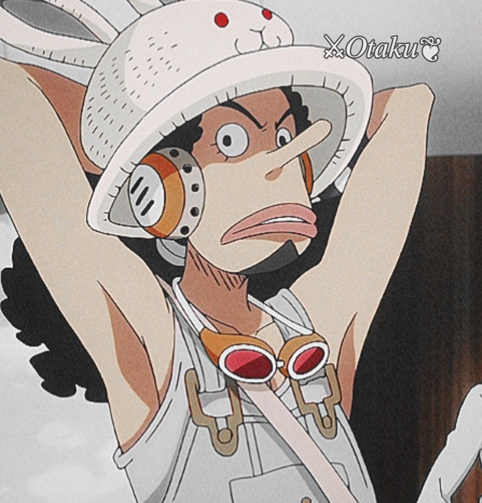
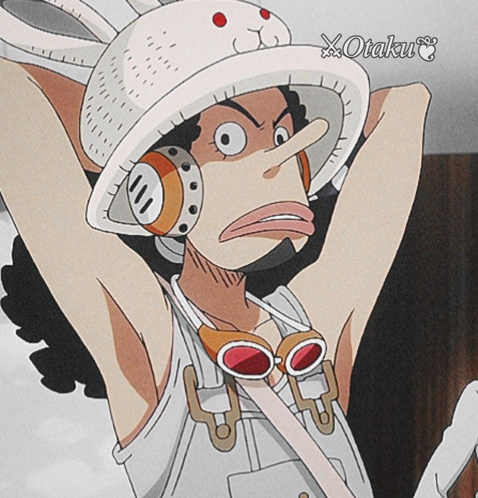

Sou desenvolvedor front‑end em início de carreira, apaixonado por transformar ideias em experiências web reais. Estudo há 1 ano e meio, e foco em aprender boas práticas de HTML, CSS e Javascript.
Gosto de interfaces limpas, semânticas e acessíveis. O que me move é a vontade de aprender e de fazer a web mais eficiente e agradável.
Neste portfólio, você encontra uma lista dos meus 3 principais trabalhos. Cada iniciativa trouxe novos aprendizados ao me desafiar a aplicar conceitos de estrutura, estilo e interatividade de maneira significativa. Com foco em construir com propósito, entregando resultados funcionais e bem organizados.
Projetos